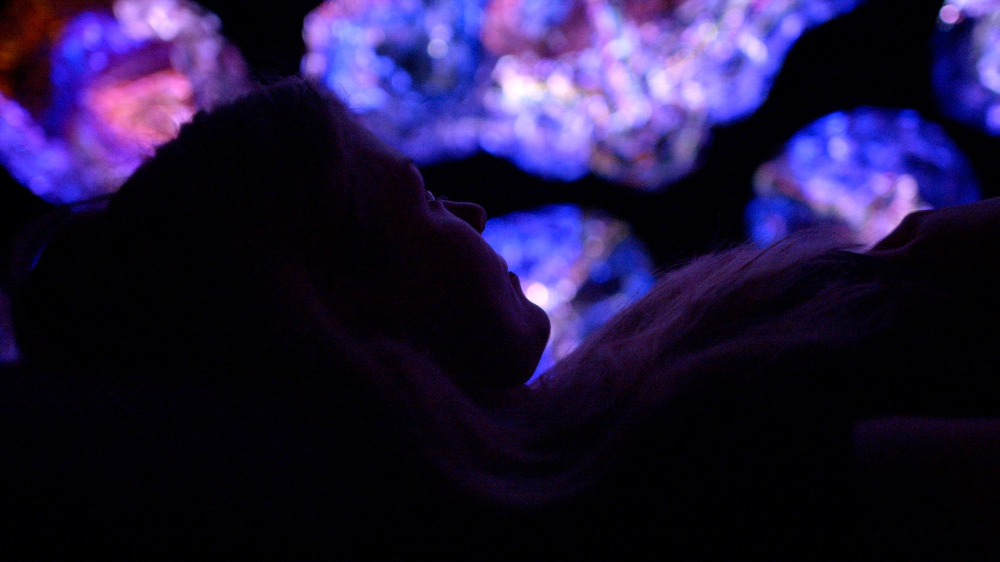

Click any image to see it full-size. Images are loaded from site/public/.
These are real content images with alt="". Each needs a descriptive alt.
date1-copy-e1769692334982.jpeg
FIX

| Used in | DejtSv.astro, DejtEn.astro |
| Current | (empty) |
| Suggested sv | Par som sitter tillsammans i ljuset på ANDETAG |
| Suggested en | Couple sitting together in the light at ANDETAG |
ANDETAG-Art-Week-Opening-2-photo-by-Gustaf-Tadaa-1024x683.jpg
FIX

| Used in | OmKonstnarernaSv, OmKonstnarernaEn, DieKuenstlerDe |
| Current | (empty) |
| Suggested sv | Besökare i ANDETAG under Art Week-invigningen |
| Suggested en | Visitors at ANDETAG during the Art Week opening |
| Suggested de | Besucher in ANDETAG bei der Eröffnung der Art Week |
malin-vaver-768x1024.jpg
FIX

| Used in | OptiskFibertextilSv, OpticalFibreTextileEn, OptischeFasertextilDe |
| Current | (empty) |
| Suggested sv | Malin Tadaa vid jacquardvävstolen, väver optisk fibertextil |
| Suggested en | Malin Tadaa at the jacquard loom, weaving optical fibre textile |
| Suggested de | Malin Tadaa am Jacquard-Webstuhl beim Weben von optischem Fasertextil |
malin-vaver2-768x1024.jpg
FIX

| Used in | OptiskFibertextilSv, OpticalFibreTextileEn, OptischeFasertextilDe |
| Current | (empty) |
| Suggested sv | Närbild av handvävd optisk fibertextil som lyser inifrån |
| Suggested en | Close-up of hand-woven optical fibre textile glowing from within |
| Suggested de | Nahaufnahme von handgewebtem optischem Fasertextil, das von innen leuchtet |
TADAA-LONG-V1.00_07_24_06.Still008-2-1024x576.jpg
FIX

| Used in | VilkenTypAvUpplevelseSv, VilkenTypAvUpplevelseEn |
| Current | (empty) |
| Suggested sv | Lysande textilkonstverk i andningsrummet på ANDETAG |
| Suggested en | Glowing textile artwork in the breathing room at ANDETAG |
Current alts are keyword-stuffed search queries, not image descriptions. Each needs a rewrite based on what the photo actually shows.


Andetag-18-058-copy2-1024x683.jpg
FIX

| Used in | StockholmHomeSharedBody.astro (SEO landing pages) |
| Current | immersive art installation stockholm andetag |
| Suggested | Lysande optisk fibertextil i utställningen ANDETAG |
alt="")


